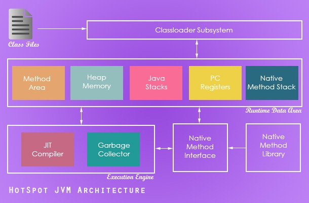

Java垃圾回收机制一 简介--Java Garbage Collection Introduction
本文非原创，翻译自Java Garbage Collection introduction 在Java中为对象分配和释放内存空间都是由垃圾回收线程自动执行完成的。和C语言不一样的是Java程序员不需要手动写垃圾回收相关的代码。这是使得Java如此流行，同时也是Java能帮助程序员写出更好的Java应用的优点之一。
计划写一个介绍Java垃圾回收基础的系列文章，共分四部分：
本文是这个系列的第一篇文章，这篇文章将会介绍一些基本术语，如：JDK，JVM，JRE，HotSpot VM，以及理解JVM的架构和Java堆内存结构。在开始学习Java垃圾回收机制之前确实有必要了解一下这些基本东西。
关键的Java术语
- Java API–一个帮助程序员创建Java应用的打包好的库集合
- Java Development Kit(JDK)–一个使得程序员能够开发Java应用的工具集合
- Java Virtual Machine(JVM)–JVM是一个抽象的计算机。Java程序是针对JVM规范写的。JVM是根据不同的操作系统平台实现的，它将Java指令翻译成对应平台上的指令，并执行。这样Java程序能够达到平台独立性。
- Java Runtime Environment(JRE)–JRE由一个JVM的实现和Java API组成。
Java HotSpot虚拟机
每个JVM的实现在对垃圾回收的原理的实现方式上会有一些不同。在收购SUN之前Oracle有JRockit JVM，收购SUN之后有了HotSpot虚拟机。目前Oracle同时维护了这两个虚拟机，并宣称将来会将两个虚拟机合并。 HotSpot虚拟机是Oracle标准版平台的核心组成部分。在本垃圾回收系列文章中我们将通过HotSpot虚拟机来了解垃圾回收的基本准则。
JVM 架构
下面的这幅图概括了一个JVM中的主要组成。在JVM架构中，堆内存和垃圾回收器这两个部分和垃圾回收相关。堆内存是运行时用来存储实例对象的数据空间，垃圾回收器运行在堆内存上。现在我们大概知道它们是怎样的一个工作模式。

Java 堆内存
在Java的内存模型中，最重要的是要了解堆内存的概念。运行时的Java实例对象存储在堆内存空间中。当一个对象不再被引用了，它变成可被从堆内存中回收空间。在垃圾回收的过程中，这些对象将被从堆内存中清除，同时它们的空间也就被回收了。堆内存的空间主要分成了三部分，
-
年轻代
a. Eden区(所有实例在运行时最初都分配到eden区中) b. S0 Survivor Space(老一些的对象被从eden区移动到S0区，其实是eden区中的对象经过一次对eden区的Young GC还存活的对象被移动到S0) c. S1 Survivor Space(再老一些的对象被从S0区移动到S1区，其实是在Young GC过程中S0区已满，则会将eden区中还存活的对象和S0区中的存活对象移动到S1区中)
- 老年代(经过S0，S1中几轮迭代后还存活的对象被提升到老年代)
- 永久代(包含一些元数据像类、方法等等)

更新:永久代在Java8中被去掉了